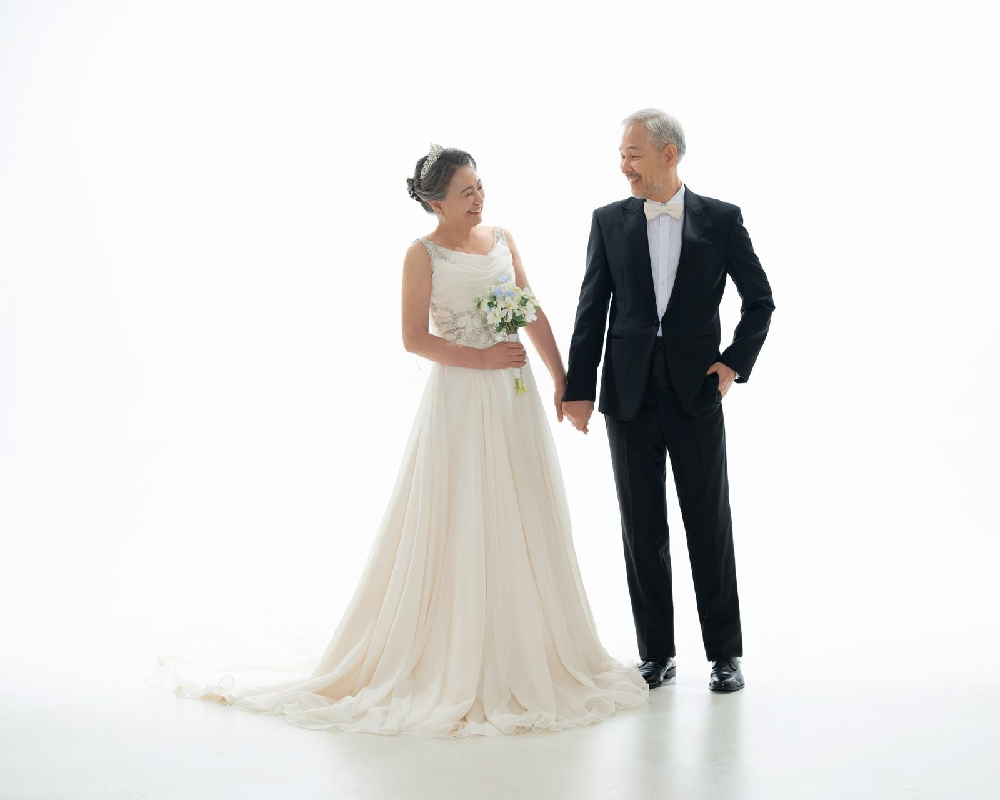
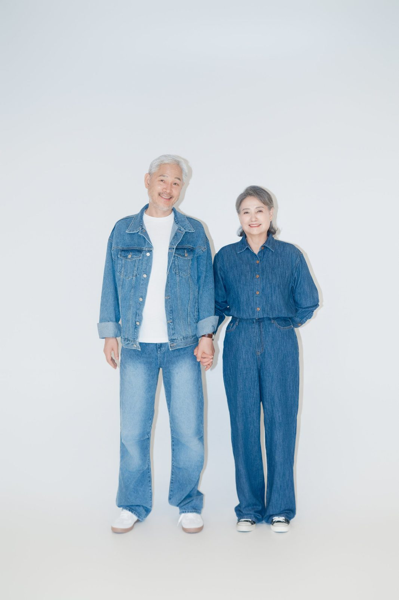
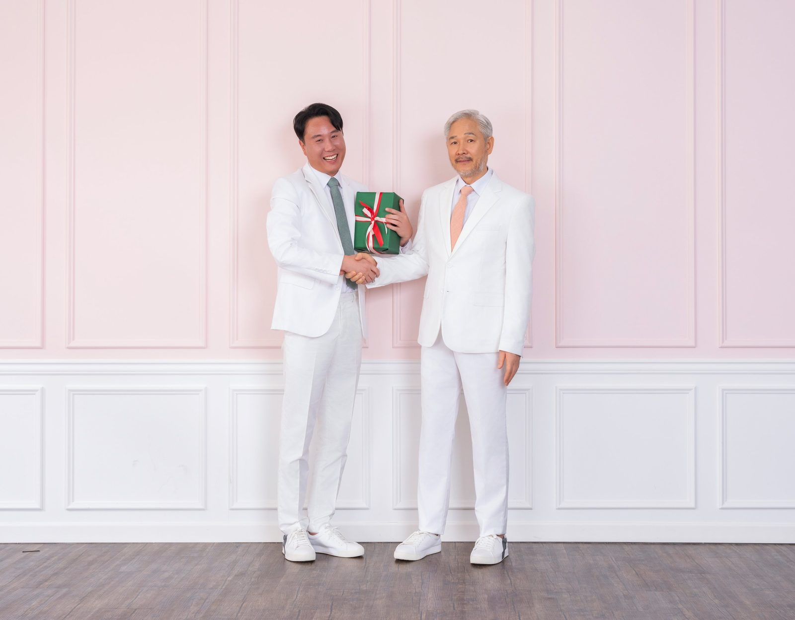
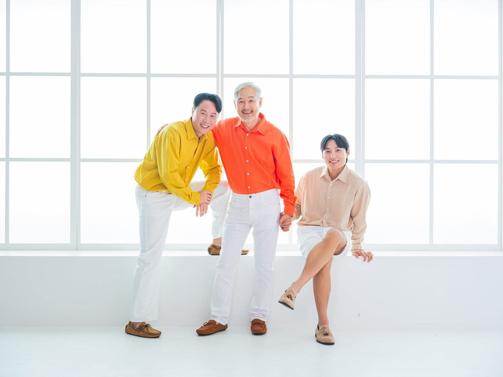
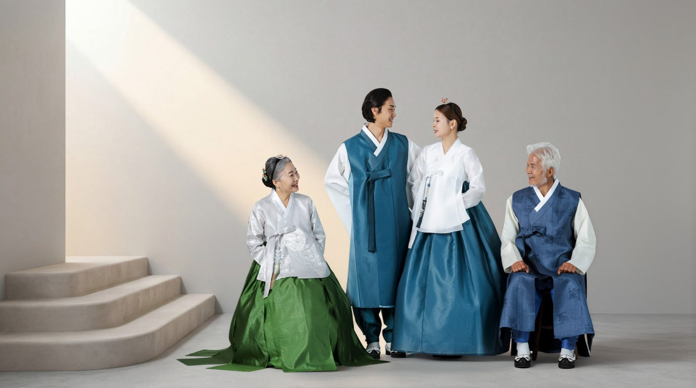

창원 장수사진 — 부모님의 여든을 가장 환한 얼굴로 남기는 일
2026-10-20 발행
창원 장수사진은 부모님의 칠순이나 팔순을 앞두고 그 얼굴을 제대로 남기는 촬영입니다. 가족사진 속 한 컷으로 남기기에는 조금 아쉬운 얼굴입니다. 평생 가족을 위해 살아오신 분이니, 적어도 사진 한 장은 그분을 위한 시간이어야 한다고 생각합니다.

사랑이야기 스튜디오 창원점은 경남 창원시 성산구 원이대로 652, 상남동 롯데빌딩 2층에 있습니다. 장수사진은 조명과 배경을 차분하게 잡는 실내 촬영입니다. 창가의 자연광과 인공 조명을 함께 써서 얼굴의 결을 살립니다.
장수사진은 장수를 기원하며 어르신의 초상을 찍는 사진입니다. 오래 두고 보는 사진이면서, 필요할 때 영정으로도 쓰이는 사진입니다. 그래서 다른 사진보다 표정과 조명을 더 신경 씁니다. 지금의 얼굴을, 가장 편안한 모습으로 남기는 것이 목적입니다. 잘 찍은 장수사진 한 장은 사진첩 속에서도, 벽에 걸린 액자 속에서도 오래 이야기를 합니다.
옷은 한복이 가장 많습니다. 여성 어르신은 저고리와 치마, 남성 어르신은 저고리와 바지에 두루마기를 입으시는 경우가 많습니다. 한복이 부담스러우시면 정장이나 단정한 니트도 좋습니다. 중요한 것은 옷이 아니라 얼굴이 편한가입니다.
안경은 벗고 찍는 편이 좋습니다. 렌즈에 빛이 반사되면 눈이 가려집니다. 평소 안경을 꼭 쓰셔야 한다면, 촬영 전에 렌즈를 닦고 조명 각도를 조정합니다. 안경테가 얼굴에 그림자를 만들면 잠시 벗고 찍은 컷과 비교해 보시면 됩니다.
표정은 웃는 얼굴로 찍습니다. 다만 크게 웃기보다 입꼬리를 조금 올리는 정도가 좋습니다. 어르신들은 정면을 바라보며 긴장하시는 경우가 많아서, 촬영 전에 몇 마디 이야기를 나눕니다. 요즘 어떻게 지내시는지, 손주는 큰일 했는지. 그 이야기 끝에 표정이 풀립니다.
조명은 얼굴의 윤곽을 살리는 쪽으로 잡습니다. 이마와 볼에 빛이 고르게 앉고, 턱 아래 그림자는 부드럽게 만듭니다. 배경은 남색, 회색, 흰색 중에서 고르시면 됩니다. 남색은 차분하고, 흰색은 밝고 깨끗합니다. 한복을 입으셨다면 남색이나 회색이 잘 어울립니다.
어르신이 긴장하시면 잠시 앉아서 이야기부터 합니다. 촬영장에 들어오자마자 카메라를 들이대지 않습니다. 차를 한 잔 드리고, 오늘 어떻게 오셨는지 묻고, 사진을 천천히 보여 드립니다. 그다음에 카메라를 세웁니다. 순서를 바꾸는 것만으로 표정이 달라집니다.
가족이 함께 오시면 가족사진을 먼저 찍습니다. 가족이 다 같이 서서 웃는 사진을 먼저 만들고, 그다음에 어르신 단독 사진으로 넘어갑니다. 이 순서가 좋은 이유는, 가족과 함께 웃은 뒤에 혼자 서면 긴장이 이미 풀려 있기 때문입니다.
장수사진을 찍을 때 자녀분들이 옆에서 휴대폰으로 찍는 것도 괜찮습니다. 다만 카메라 앞에서 여러 대의 폰이 동시에 들리면 어르신이 어디를 봐야 할지 몰라 하십니다. 촬영이 끝난 뒤에 편하게 찍으시도록 안내해 드립니다.

칠순·팔순 잔치를 앞두고 오시는 분들도 많습니다. 잔치장에 걸 큰 사진이 필요하거나, 가족이 모이는 날 함께 찍고 싶어서 오십니다. 잔치 날짜가 정해져 있다면 그보다 두세 달 전에 촬영하시는 편이 좋습니다. 사진을 인화하고 액자를 만드는 시간이 필요합니다.
액자는 원목으로 만드는 것을 권합니다. 장수사진은 오래 두고 보는 사진이기 때문에, 시간이 지나도 색이 변하지 않는 재질이 좋습니다. 거실에 걸 크기와 방에 둘 크기 중에서 고르시면 됩니다. 액자까지 함께 정하시면 한 번에 마무리됩니다.
장수사진뿐 아니라 프로필 사진도 찍습니다. 요즘은 이력서나 회사 소개, 개인 채널에 쓸 사진을 찾는 분들이 늘었습니다. 증명사진처럼 딱딱하지 않으면서 얼굴이 잘 보이는 사진입니다. 배경과 조명을 달리해 두어 컷을 찍고, 용도에 맞게 골라 드립니다.
부부가 함께 오시는 경우도 많습니다. 두 분이 나란히 앉아 손을 잡은 사진, 서로를 바라보는 사진, 각자 단독으로 찍는 사진. 한 번 오셔서 여러 컷을 남기실 수 있습니다. 결혼기념일과 겹치면 리마인드웨딩으로 이어서 찍기도 합니다.

예약은 전화나 카카오톡 채널로 하실 수 있습니다. 촬영 시간은 한 시간 안팎입니다. 옷을 갈아입고 조명을 맞추는 시간이 포함된 시간입니다. 어르신이 지치지 않도록 중간에 쉬는 시간을 넣습니다.

장수사진은 무겁게 생각하실 필요가 없습니다. 요즘은 칠순·팔순 잔치의 초대장에 넣을 사진으로 찾는 분들도 많습니다. 밝은 배경에 웃는 얼굴이면 초대장이 훨씬 따뜻해집니다. 좋은 옷을 입고, 밝은 조명 아래에서, 가족과 함께 웃는 시간입니다. 사진을 찍고 나면 대개 말씀하십니다. 생각보다 편했다고. 그리고 그 사진을 집에 걸어 두고 자주 보신다고.

부모님 사진을 미루고 있다면, 올해 안에 한 번 모시고 오시길 권합니다. 사진은 미룰수록 표정이 달라집니다. 지금의 얼굴이 가장 좋은 얼굴입니다. 그 얼굴을 남기는 일은, 생각보다 오래 마음에 남습니다.

창원 장수사진을 찾으시는 분들께 늘 같은 말씀을 드립니다. 부모님께 사진을 찍자고 하면 대개 사양하십니다. 그래서 자녀분들이 먼저 예약하고 모시고 오시는 경우가 많습니다. 도착하시면 생각이 달라지십니다. 조명 앞에 서 보시면 아시게 됩니다.
사진을 고르실 때는 눈을 감지 않은 컷, 입꼬리가 자연스러운 컷을 먼저 보세요. 그다음에 배경과 옷이 마음에 드는 컷을 고르시면 됩니다. 잘 나온 한 장을 크게 남기고, 나머지는 가족끼리 나눠 가지시면 됩니다. 형제가 멀리 살아도 같은 사진을 한 장씩 가지고 있으면, 부모님의 얼굴을 같은 자리에서 보게 됩니다.
촬영 전날은 푹 주무시는 것이 가장 좋은 준비입니다. 얼굴색도 표정도 잠에서 나옵니다. 아침에는 평소처럼 드시고 오시면 됩니다. 화장은 저희가 함께 합니다. 어르신은 평소보다 조금 밝게, 자녀분들은 자연스럽게 잡습니다.
사진을 찍은 뒤에는 함께 보면서 고릅니다. 마음에 들지 않는 컷은 그 자리에서 다시 찍습니다. 표정이 조금 굳었거나 눈이 감긴 컷은 걸러 드리고, 필요한 경우 리터칭으로 정리합니다. 사진을 받아 보시고 수정할 부분이 있으면 말씀해 주세요.
대가족이 함께 오시는 날에는 장수사진을 먼저 찍습니다. 어르신이 가장 컨디션이 좋은 시간에 단독 사진을 남기고, 그다음에 가족이 합류해 단체 사진을 찍습니다. 순서를 이렇게 잡으면 어르신이 기다리는 시간이 줄어듭니다.
자주 묻는 질문
Q. 장수사진은 영정으로도 쓸 수 있나요?
A. 네. 장수사진은 오래 두고 보는 사진이면서 필요할 때 영정으로도 쓰이는 사진입니다. 그래서 표정과 조명을 더 신경 써서 찍습니다.
Q. 한복이 없어도 찍을 수 있나요?
A. 네. 정장이나 단정한 니트도 좋습니다. 의상실에 촬영용 한복이 준비되어 있으니 상담 때 함께 골라 입으실 수 있습니다.
Q. 어르신이 사진 찍는 것을 싫어하시는데요.
A. 대개는 촬영장에 도착하시면 마음이 달라지십니다. 대화를 먼저 나누고 천천히 진행하니, 자녀분들이 먼저 예약하고 모시고 오시는 경우가 많습니다.

오시는 곳
사랑이야기창원점
- 주소 경남 창원시 성산구 원이대로 652, 상남동 롯데빌딩 2층
- 전화 055-287-8022
- 영업시간 오전 10:00 ~ 오후 7:00
- 예약 전화 상담 · 카카오톡 채널
- 주차 건물 지하 주차장
김작가사진이야기 의령
- 주소 경남 의령군 궁류면 청정로 1188
- 전화 055-574-3706
- 영업시간 오전 10:00 ~ 오후 7:00
- 예약 전화 상담 · 카카오톡 채널
- 주차 전용 주차장
이 글에 한마디
댓글창을 준비하고 있습니다. 그동안 궁금한 점은 카카오채널로 남겨 주시면 바로 답변드립니다.
카카오채널로 한마디 남기기